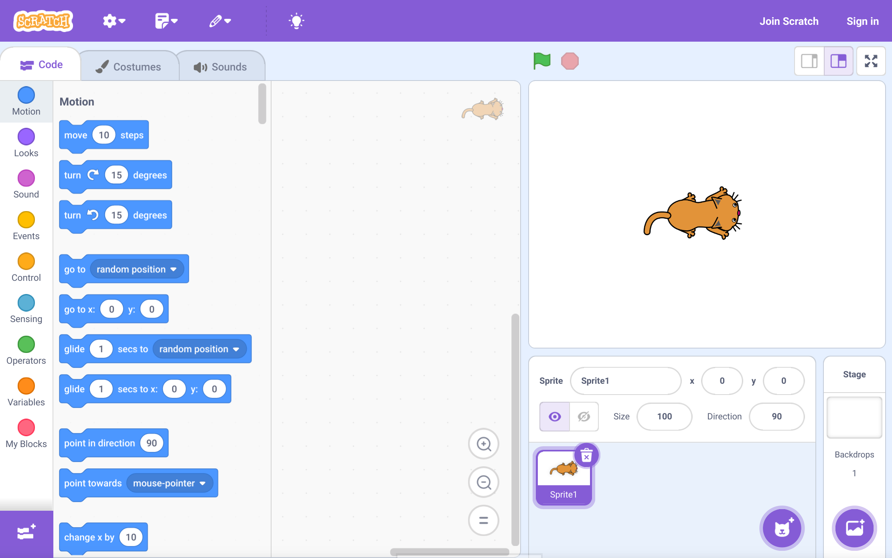
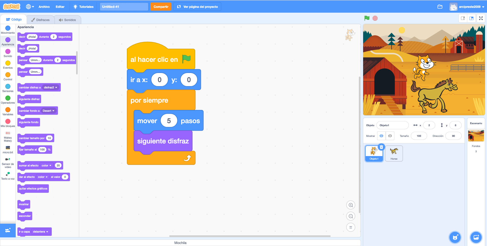
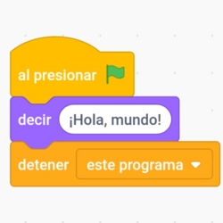
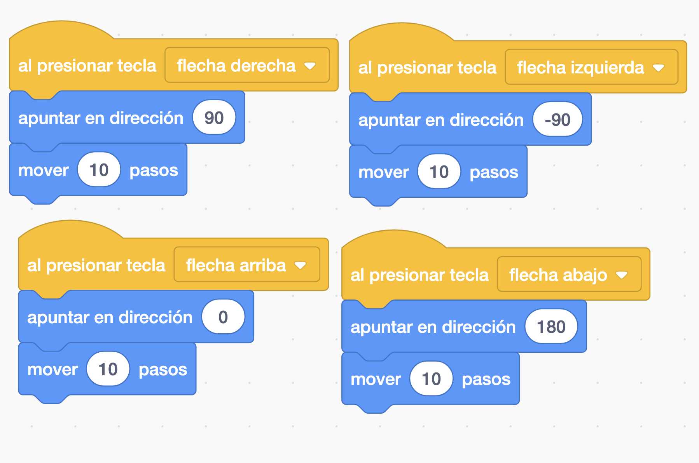

¡Bienvenido al Mundo de la Programación!
¿Alguna vez te has preguntado cómo funcionan tus videojuegos favoritos? ¿Cómo los personajes se mueven, reaccionan o cómo se guardan tus puntuaciones? En esta unidad, vamos a descubrir la magia detrás de los videojuegos y, lo que es mejor, ¡vamos a crear los nuestros propios!
La programación es como darle instrucciones a un ordenador para que haga lo que tú quieres. Es una habilidad súper útil y creativa. Usaremos una herramienta muy divertida llamada Scratch, que es perfecta para empezar.

- - ¡Así es como se ve Scratch!
1. Lenguajes de Programación Visuales: ¡Programar Jugando!
Imagina que quieres construir algo con piezas de LEGO. Los lenguajes de programación visuales son muy parecidos: en lugar de escribir código complicado, arrastras y sueltas bloques que encajan entre sí, como si fueran piezas de un puzzle. Cada bloque tiene una instrucción específica.
Esto hace que aprender a programar sea mucho más fácil y divertido, ¡porque puedes ver lo que estás haciendo!
Tipos de Lenguajes Visuales:
- Scratch: El que usaremos. Desarrollado por el MIT, es ideal para crear historias interactivas, animaciones y juegos.
- Blockly: Una biblioteca de Google que permite crear editores de código visuales.
- App Inventor: Para crear aplicaciones móviles Android con bloques.
- Y muchos más...

- - ¡Así se conectan los bloques en Scratch!
2. Lenguajes de Bloques: La Magia de Encajar Piezas
Los lenguajes de bloques son una categoría específica de lenguajes visuales donde cada instrucción es un "bloque" con una forma única. Piensa en ellos como piezas de un rompecabezas que solo encajan de una manera lógica.
Ventajas clave:
- Fácil de aprender: No necesitas memorizar comandos complicados.
- Sin errores de sintaxis: Los bloques solo encajan si la lógica es correcta, ¡adiós a los errores de escritura!
- Visual e intuitivo: Ves el flujo de tu programa.
En Scratch, cada bloque representa una acción (mover, decir, cambiar color) o un evento (al hacer clic, al presionar tecla). Al unirlos, creas un script, que es la secuencia de instrucciones que tu personaje (o "sprite") seguirá.

- - Un script de Scratch, ¡una secuencia de acciones!
¡Actividad Práctica! Visita la web de Scratch y explora los diferentes tipos de bloques: Explora Proyectos en Scratch
3. Algoritmos y Secuencias: ¡El Recetario de tu Videojuego!
Un algoritmo es como una receta de cocina: una serie de pasos claros y ordenados para resolver un problema o completar una tarea. En programación, es el plan que le das al ordenador.
La secuencia de instrucciones es el orden en que se ejecutan esos pasos. Si cambias el orden, ¡el resultado puede ser muy diferente! Piensa en vestirte: primero te pones los calcetines y luego los zapatos. Si lo haces al revés, ¡no funciona!
Ejemplo en Scratch: Mover un personaje
cuando 🚩 haga clic ir a x: (0) y: (0) // Paso 1: Ir al centro de la pantalla apuntar en dirección (90) // Paso 2: Mirar a la derecha mover (100) pasos // Paso 3: Moverse 100 pasos decir (¡Hola!) por (2) segundos // Paso 4: Saludar
Cada bloque se ejecuta uno después del otro, en el orden en que los colocas. ¡Así es como tu personaje sabe qué hacer!
¡Actividad Práctica! Abre Scratch y crea un script para que un personaje se mueva, cambie de color y luego diga algo. Experimenta cambiando el orden de los bloques.
Abrir Editor de Scratch4. Tareas Repetitivas y Condicionales: ¡La Lógica del Juego!
Los videojuegos no serían interesantes si todo fuera una secuencia lineal. Necesitamos que las cosas se repitan y que el juego tome decisiones.
Tareas Repetitivas (Bucles):
¿Imaginas programar cada paso de un personaje que camina? ¡Sería aburridísimo! Para eso usamos los bucles. Un bucle le dice al programa: "Haz esto una y otra vez".
- Bloque "repetir (X)": Repite las instrucciones X veces.
- Bloque "por siempre": Repite las instrucciones infinitamente (ideal para el movimiento de un personaje).
cuando 🚩 haga clic por siempre mover (10) pasos si toca borde, rebotar
- - Un personaje moviéndose "por siempre".
Tareas Condicionales (Decisiones):
Los juegos están llenos de decisiones: "Si toco una moneda, gano puntos", "Si me toca un enemigo, pierdo vida". Para esto usamos las condiciones. Una condición le dice al programa: "Si esto es VERDADERO, haz esto; si no, haz otra cosa (o no hagas nada)".
- Bloque "si (condición) entonces": Ejecuta las instrucciones solo si la condición es verdadera.
- Bloque "si (condición) entonces, si no": Ejecuta un conjunto de instrucciones si es verdadero y otro si es falso.
cuando 🚩 haga clic por siempre sientonces cambiar disfraz a (¡Explosión!) decir (¡Game Over!) si no siguiente disfraz
- - Un ejemplo de condición en Scratch.
¡Actividad Práctica! En Scratch, crea un personaje que se mueva por siempre, y si toca un color específico, que cambie su mensaje.
5. Interacción con el Usuario: ¡Tu Juego Responde!
Un videojuego es divertido cuando puedes interactuar con él. Esto significa que el juego puede recibir información de ti (entrada) y mostrarte información (salida).
Elementos de Interacción en Scratch:
- Entrada (Input):
- Teclado: Bloques como "al presionar tecla (espacio)".
- Ratón: Bloques como "al hacer clic en este objeto", "posición x/y del ratón".
- Sensores: Bloques como "preguntar (¿Cómo te llamas?) y esperar" para introducir texto.
- Salida (Output):
- Movimiento: "mover", "girar".
- Apariencia: "decir", "cambiar disfraz", "cambiar efecto de color".
- Sonido: "tocar sonido".
- Variables: Mostrar puntuaciones, vidas, etc. (ej. "mostrar variable (puntuación)").

- - ¡Haz que tu juego cobre vida con la interacción!
¡Actividad Práctica! Crea un juego sencillo donde el usuario controle un personaje con las flechas del teclado y el personaje diga "¡Hola!" cuando se le haga clic.
Cuestionario: ¡Demuestra lo que sabes!
Responde a las siguientes preguntas para comprobar lo que has aprendido en esta unidad.
Actividades de Práctica y Evaluación
¡Es hora de poner en práctica todo lo aprendido! Aquí tienes una serie de actividades para consolidar tus conocimientos y demostrar tus habilidades en programación con Scratch.
Actividades para Practicar:
-
Historia Interactiva: Crea una historia corta en Scratch donde al menos dos personajes interactúen. Utiliza bloques de "decir", "cambiar disfraz" y "esperar" para controlar el flujo de la conversación.
Criterios trabajados:
- 1.3. Entender la estructura básica de un programa informático.
-
Bucle de Movimiento: Diseña un programa donde un personaje se mueva por la pantalla rebotando en los bordes "por siempre". Añade un sonido cada vez que rebote.
Criterios trabajados:
- 1.3. Entender la estructura básica de un programa informático.
-
Control por Teclado: Haz que un personaje se mueva arriba, abajo, izquierda y derecha utilizando las teclas de flecha del teclado.
Criterios trabajados:
- 1.3. Entender la estructura básica de un programa informático.
-
Cambio de Fondo Condicional: Crea un escenario en Scratch que cambie de fondo cuando un personaje toque un color específico o un objeto determinado.
Criterios trabajados:
- 1.3. Entender la estructura básica de un programa informático.
Actividades de Evaluación:
-
Actividad 1: "Atrapa el Objeto"
Crea un juego sencillo donde un personaje (por ejemplo, un gato) se mueva por la pantalla (usando bucles y rebotes) y otro objeto (por ejemplo, una manzana) aparezca en posiciones aleatorias. El objetivo es que el gato "atrape" la manzana (detectando el contacto) y cada vez que lo haga, se sume un punto a una variable de "Puntuación". El juego debe terminar después de un tiempo determinado (ej. 30 segundos).
Criterios trabajados:
- 1.3. Entender la estructura básica de un programa informático.
- 2.1. Conocer y resolver la variedad de problemas posibles, desarrollando un programa informático y generalizando las soluciones, tanto de forma individual como trabajando en equipo, colaborando y comunicándose de forma adecuada.
-
Actividad 2: "Laberinto Simple" (Trabajo en equipo)
En parejas o grupos pequeños, diseñad y programad un pequeño juego de laberinto en Scratch. Un personaje debe moverse por un laberinto (dibujado como fondo o con sprites) usando las flechas del teclado. Si el personaje toca las paredes del laberinto, debe volver al inicio. El objetivo es llegar a un punto final. Cada miembro del equipo debe programar al menos una parte del movimiento o la lógica del laberinto.
Criterios trabajados:
- 1.3. Entender la estructura básica de un programa informático.
- 2.1. Conocer y resolver la variedad de problemas posibles, desarrollando un programa informático y generalizando las soluciones, tanto de forma individual como trabajando en equipo, colaborando y comunicándose de forma adecuada.
Proyecto Final de Unidad: ¡Mi Gran Videojuego!
Para el proyecto final, deberás crear un videojuego original en Scratch que demuestre todo lo que has aprendido en esta unidad. Puedes trabajar individualmente o en parejas.
Requisitos Mínimos:
- Debe tener al menos dos personajes (sprites) que interactúen.
- Debe incluir movimiento para al menos un personaje.
- Debe usar bucles (repeticiones) para alguna acción.
- Debe usar condiciones (decisiones) para que el juego reaccione a eventos (ej. tocar un objeto, perder vida).
- Debe tener alguna forma de interacción con el usuario (ej. control por teclado/ratón, preguntas).
- Debe incluir una variable (ej. puntuación, vida, tiempo).
- El juego debe tener un objetivo claro y un "final" (ganar/perder).
- Debe incluir un fondo y al menos un sonido.
Presentación: Una vez terminado, deberás presentar tu videojuego a la clase, explicando cómo lo programaste y qué bloques utilizaste para cada funcionalidad.
Criterios trabajados:
- 1.3. Entender la estructura básica de un programa informático.
- 2.1. Conocer y resolver la variedad de problemas posibles, desarrollando un programa informático y generalizando las soluciones, tanto de forma individual como trabajando en equipo, colaborando y comunicándose de forma adecuada.